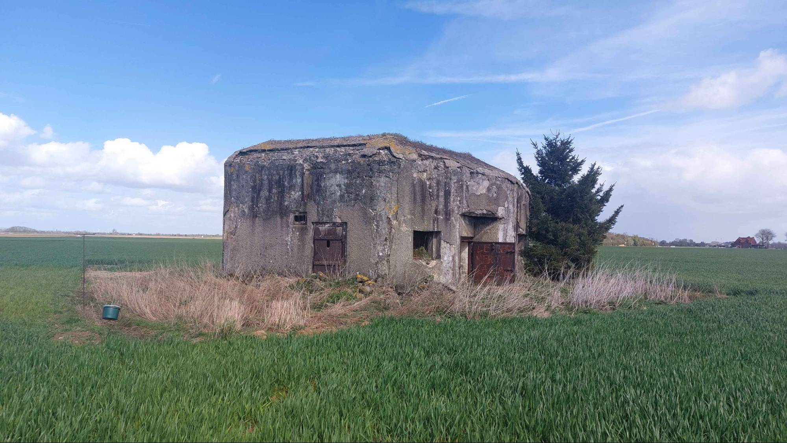
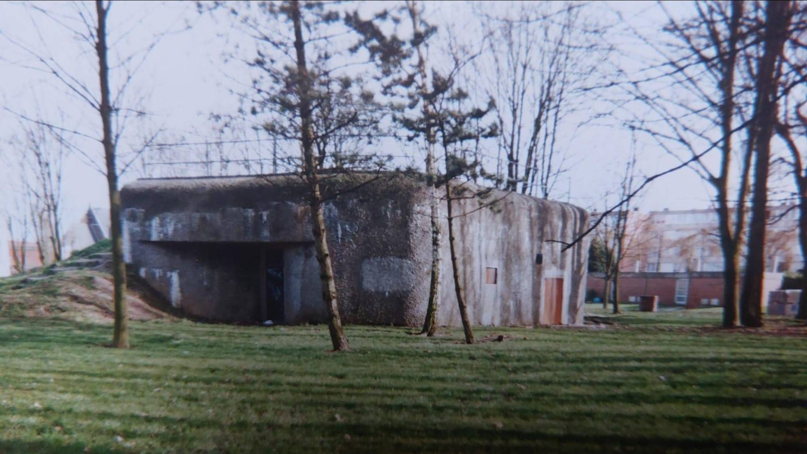
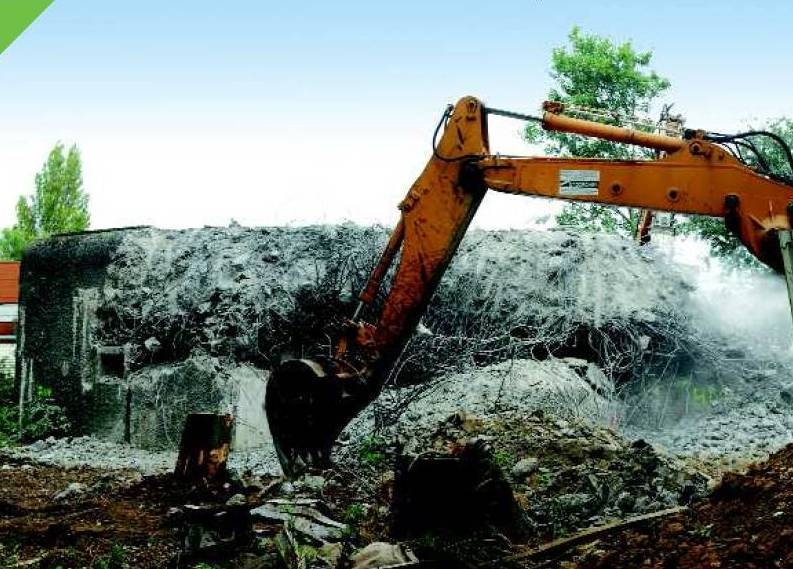
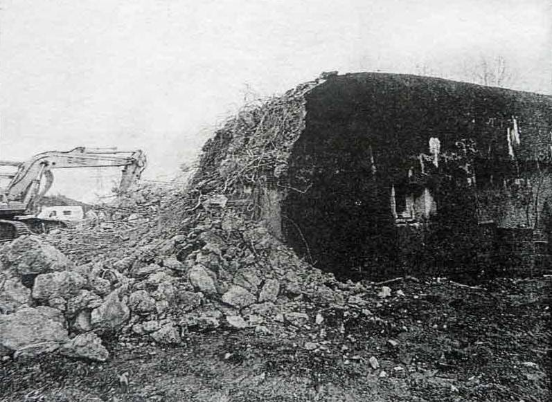
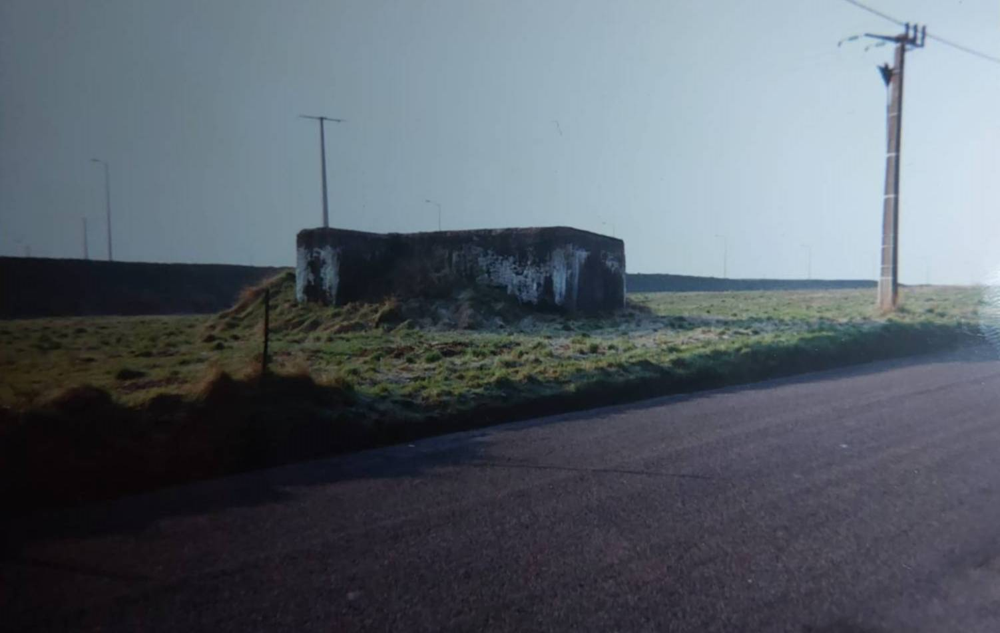
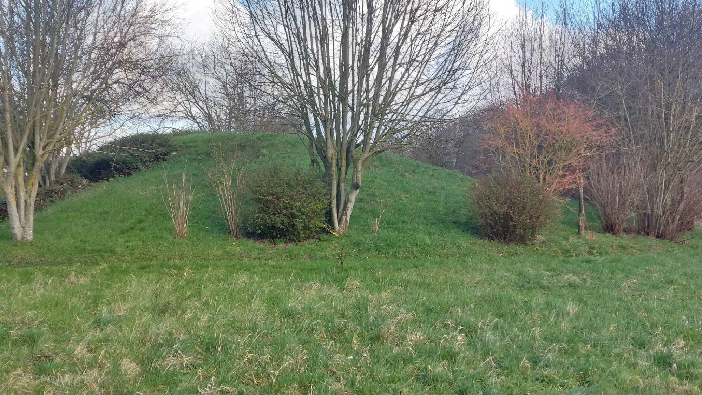
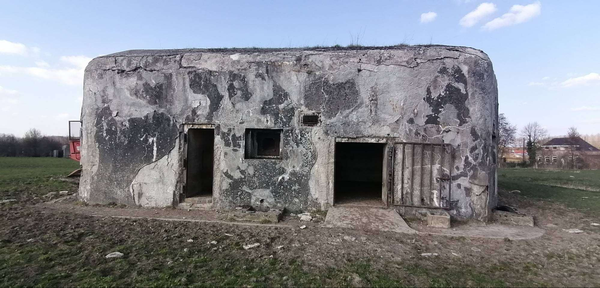

Les blockhaus face à l’urbanisation.
Destructions et réutilisations des blockhaus : entre mémoire et modernité
Les blockhaus, vestiges imposants de la Seconde Guerre mondiale, sont aujourd’hui confrontés à un dilemme majeur : celui de leur place dans un paysage urbain en constante évolution. Conçus initialement comme des fortifications militaires, ces structures massives qui incarnent à la fois un passé lourd et une architecture rigide, difficile à intégrer dans le tissu urbain contemporain.

Les destructions : effacer un passé encombrant
Souvent, les blockhaus ont été perçus comme des obstacles à l’urbanisation et au développement économique ou bien qu’après la guerre, leurs propriétaires ont décidé de les détruire. Leur taille, leur solidité et leur implantation stratégique rendent leur démolition coûteuse et complexe. Pourtant, face à la pression foncière et aux besoins croissants en espaces résidentiels, commerciaux ou publics, plusieurs municipalités ont opté pour leur destruction. Cette démarche vise à libérer des terrains stratégiques, souvent situés en bord de mer ou dans des zones attractives, afin de permettre la construction de nouveaux quartiers ou infrastructures modernes.


Cependant, cette destruction n’est pas sans controverse. Elle soulève des questions sur la conservation de la mémoire historique et sur le respect des traces matérielles du passé. De plus, ces constructions ont été faites pour résister aux plus gros chocs donc très coûteux à détruire aussi bien en argent mais aussi en termes de matériel comme par exemple le bloc du vieux sailly où une grue piqueuse s’est cassé les dents.

Les blockhaus détruits dans les années 1950 ont été détruits grâce aux dommages de guerre. Une autre méthode moins coûteuse à été trouvée, le remblai. Parfois totalement enterré ou parfois semi-enterrés.


Les réutilisations : donner une seconde vie aux blockhaus
Depuis 1945, certains ont décidé de reconvertir les blockhaus pour leur donner une seconde vie. Souvent en étable ou en abri de jardin et moins couramment en caves.

Conclusion
Les blockhaus, entre destructions et réutilisations, illustrent parfaitement les tensions entre mémoire et modernité, entre conservation et développement. Leur avenir dépendra largement des choix politiques, économiques et culturels des territoires concernés. Qu’ils soient démolis pour faire place au neuf ou réhabilités pour devenir des lieux de vie et de culture, ces vestiges continueront à marquer durablement le paysage urbain et la mémoire collective.
Rédaction : Erwan Merlin